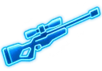
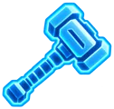
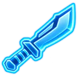
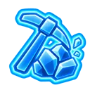
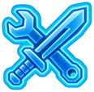
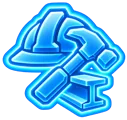
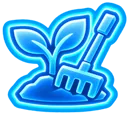
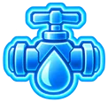
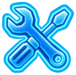

Ciężka broń automatyczna
Zwiększa obrażenia zadawane przez ciężką broń automatyczną o +1% na każdy punkt umiejętności, aż do +100% na 100 poziomie. Postęp jest wolniejszy ze względu na duży magazynek.
<AI> Umiejętności zwiększają się wraz z częstotliwością ich używania, aż do poziomu 100. Wyposażenie, implanty i efekty statusu mogą zwiększyć efektywność umiejętności powyżej tego poziomu.
Zwiększa obrażenia zadawane przez ciężką broń automatyczną o +1% na każdy punkt umiejętności, aż do +100% na 100 poziomie. Postęp jest wolniejszy ze względu na duży magazynek.
Zwiększa obrażenia karabinu szturmowego o +1% na każdy punkt umiejętności, aż do +100% na 100 poziomie.

Zwiększa obrażenia zadawane przez karabin snajperski o +1% na każdy punkt umiejętności, aż do +100% na 100 poziomie.
Zwiększa obrażenia zadawane pistoletem o +1% na każdy punkt umiejętności, aż do +100% na 100 poziomie. Zmniejsza również rozrzut.
Zwiększa obrażenia zadawane przez pistolet maszynowy o +1% na każdy punkt umiejętności, aż do +100% na 100 poziomie.
Zwiększa obrażenia zadawane strzelbą o +1% na każdy punkt umiejętności, aż do +100% na 100 poziomie.
Zwiększa obrażenia zadawane bronią przebijającą o +1% na każdy punkt umiejętności, aż do +100% na 100 poziomie.

Zwiększa obrażenia od broni obuchowej o +1% na każdy punkt umiejętności, aż do +100% na 100 poziomie.

Zwiększa obrażenia zadawane bronią tnącą o +1% na każdy punkt umiejętności, aż do +100% na 100 poziomie.
Zwiększa obrażenia zadawane pięściami i kostkami o +1% na każdy punkt umiejętności (do +100% na 100. poziomie) oraz szybkość ataku o +0,3% na każdy punkt (do +30% na 100. poziomie). Uczy się uderzania pięściami i kostkami.
Zwiększa obrażenia zadawane przez materiały wybuchowe, granaty i granatniki o +1% na każdy punkt umiejętności, aż do +100% na 100 poziomie.
Szybsze przeszukiwanie punktów łupów. Uczy się poprzez ukończenie normalnego przeszukiwania; na poziomie umiejętności 100 czas przeszukiwania spada do około 10% czasu bazowego.
Szybsze ścinanie i zbieranie drewna. Uczy się poprzez ukończenie punktu z drewna; na poziomie umiejętności 100 czas zbioru spada do około 10% czasu bazowego.

Szybsze kopanie kilofem. Wyszkolone poprzez zdobycie punktu wydobywczego; na poziomie 100 umiejętności czas wydobycia spada do około 10% czasu bazowego.
Podczas kucania zmniejsza promień wykrywania: od 100% przy umiejętności 0 do 40% przy umiejętności 100. Doświadczenie zdobywa się po opuszczeniu strefy zagrożenia bez wykrycia; wszelka agresja uniemożliwia postęp i niewidzialność.
Szeroka metaumiejętność z miękkimi bonusami: krótszy czas wytwarzania implantów i modyfikacji oraz krótszy czas instalacji implantów.
Dotyczy wszystkich przepisów na przedmioty jednorazowego użytku: krótszy czas wytwarzania i szansa na dodatkowy plon.
Masowe wytwarzanie: krótszy czas wytwarzania i szansa na uzyskanie dodatkowych plonów.

Odblokowuje przepisy na broń białą w zależności od poziomu umiejętności.
Odblokowuje przepisy na broń palną w zależności od poziomu umiejętności i przyspiesza jej wytwarzanie.
Odblokowuje receptury w zależności od poziomu umiejętności. Dotyczy komponentów, zespołów technologicznych i wieżyczek.
Odblokowuje przepisy na zbroję w zależności od poziomu umiejętności.
Przyspiesza naukę fraktali: od 1x przy umiejętności 0 do 3x przy umiejętności 100. Doświadczenie zdobywa się za każde ukończone badanie.

Przyspiesza budowę i nieznacznie obniża jej koszty.

Szybkość produkcji żywności w szklarni: od 1x przy umiejętności 0 do 3x przy umiejętności 100. Doświadczenie zdobywa się za każdy ukończony cykl.

Szybkość produkcji wody ze studni: od 1x przy umiejętności 0 do 3x przy umiejętności 100. Doświadczenie zdobywa się za każdy ukończony cykl.

Naprawa i konserwacja: krótszy czas naprawy i niższe koszty zasobów.